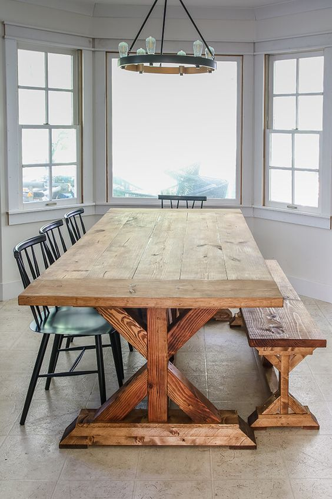

Only restoration that is strictly necessary is carried out — preferring to conserve whenever possible — ensuring that your furniture remains in as original a condition as is practicable, retaining its natural patination and continuing to appreciate in value.
